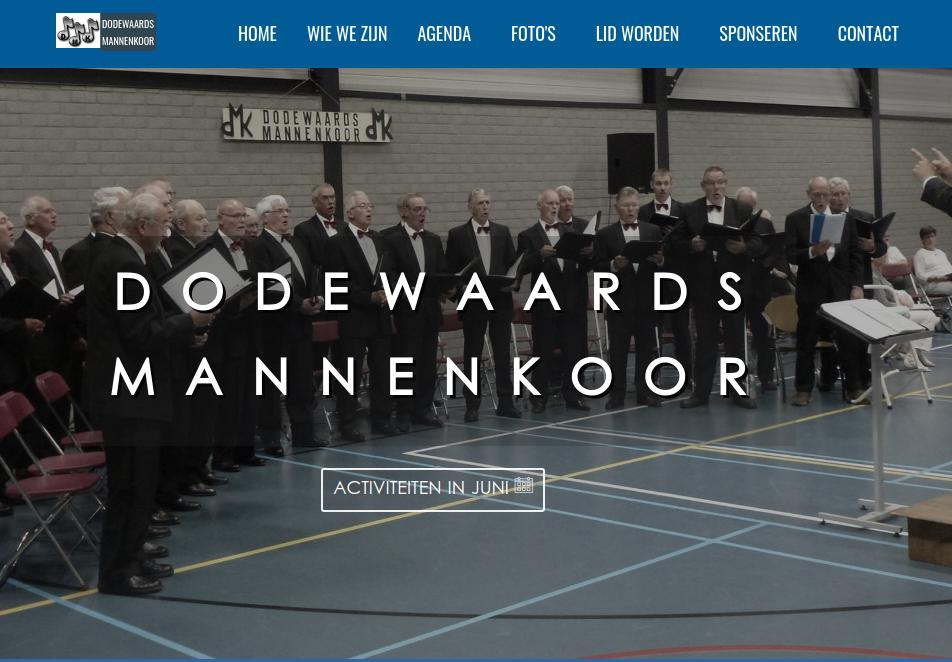

Things that really get me going:
"Coding"
"Painting"
"Teaching"
Things I have done so far
Web Design and Developement
Dedewaard, The Netherlands
March 2019 – May 2019
This is a choir website that I developed for the men's choral group in Dedewaard, The Netherlands.
It was my first time developing a website in Dutch. I enjoyed practicing and commincation in Dutch.
I am very happy that the choral group likes the website.

Social Media Analyst
Rotterdam, The Netherlands
January 2020 - Present
I work with data related to trends and topics about coffee consumption in Thailand and The Philippines. I also translate coffee consumer's comments or feedbacks into sentimental data.
Analyst & Project Coordinator
New York, USA
February 2018 - December 2018
I got a chance to work more on data anlysis when I started to work here. I analyzed project requirements from clients and coordinated with
development team (ca. 3 persons) and web-developer team (ca. 3 persons) to develop web application products for clients. I also developed the news sentiment dictionary in XML for predicting daily
stock movement direction. I improved and maintained dictionary according to results from test
runs.